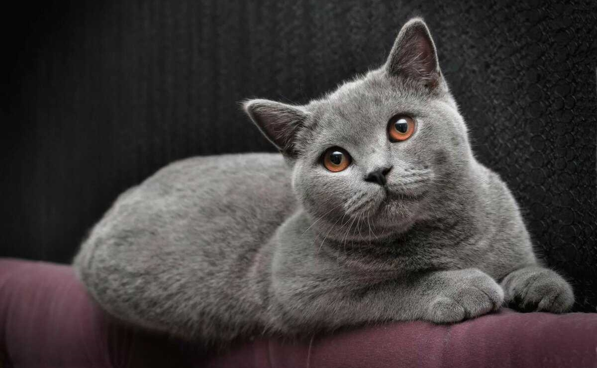

Британская короткошёрстная кошка

Британская короткошёрстная кошка — порода домашней кошки.
По одной версии является потомком породы Шартрез,
а по другой, римских кошек и местных сородичей.
Содержание статьи
- Краткая информация о породе
- Основные факты
- Характеристика британской кошки
- Характер и повадки породы
- Содержание и уход
- Фотографии
Краткая информация о породе
- Название породы: британская короткошерстная кошка.
- Страна происхождения: Великобритания.
- Время зарождения породы: XIX век.
- Вес: самки — 3-4 кг, самца — 5-8 кг.
- Высота в холке: 28-33 см.
- Шерсть: короткая, плотная, с густым подшерстком.
- Цвет глаз: оранжевый, темно-золотистый, медный, голубой, зеленый.
- Средняя продолжительность жизни: 14-16 лет.
Основные факты
- Порода отличается крепким здоровьем.
- Длительное время эталонными считались только «британцы» голубого окраса.
Сейчас существует более 100 вариантов окрасов: самые популярные — серо-голубой,
шоколадный, лиловый, кремовый. Самые редкие — циннамон и фавн. - Раньше «британцы» пользовались популярностью только из-за навыка ловли мышей.
- Питомцы сдержанны и не любят нарушения личных границ.
Редко сидят на руках и не выпрашивают ласку. - Спокойно переносят длительное отсутствие хозяина и подойдут людям,
которые много времени проводят на работе.
Характеристика британской кошки
- Активность. Котята активны и игривы, взрослые особи предпочитают
проводить время за спокойным отдыхом, но не откажутся иногда поиграть в
активные игры. - Дружелюбность. Хорошо ладят с другими питомцами и не претендуют на всецелое
внимание хозяина к себе. Терпеливо относятся к детям и не проявляют
агрессию: предпочитают удалиться в тихое место, если им что-то не нравится. - Общительность. Сдержаны в проявлении эмоций и больше любят проводить время в
одиночестве. Отличаются независимостью, не настаивают на
внимании и редко мяукают. - Отношение к одиночеству. Спокойно переносят одиночество и могут найти
себе развлечение самостоятельно. - Линька. Линяют 2 раза в год — осенью и весной, но иногда процесс может
затягиваться из-за особенностей питания и здоровья.
Характер и повадки породы
Характер британских кошек — их главная визитная карточка после
внешнего вида. Питомцы довольно самодостаточны, не боятся
одиночества и уважают личные границы.
Кошки этой породы хорошо ладят с другими питомцами, редко
проявляют агрессию и стараются не вступать в конфликты.
Отличаются чистоплотностью и легко приучаются к лотку.
Взрослые особи предпочитают спокойный отдых вместе с
хозяином и с радостью разделят уютный вечер за просмотром фильма.
«Британцы» не будут выпрашивать ласку и навязывать свое внимание и
тем более заявлять о своих правах мяуканьем. Они терпеливо дождутся,
когда хозяин уделит им время, и с радостью примут ласку, если она
будет преподнесена тактично. Чего точно не потерпит ни один аристократ —
принудительных объятий и поглаживаний на руках: он высвободится из рук,
намекнув, что не настроен на подобную близость.
Британские кошки легко найдут общий язык с детьми: они не позволят себе
укусить или поцарапать ребенка и предпочтут удалиться в другую комнату,
если игры и общение им наскучат.
Содержание и уход
Уход не займет у хозяина много времени: достаточно выполнять ряд процедур,
которые помогут сохранить красоту экстерьера и здоровье питомца.
Шерсть «британцев» не спутывается и не сбивается в колтуны, поэтому их
можно вычесывать раз в неделю плоской расческой со средними зубьями.
Использовать пуходерку для вычесывания не стоит: это может негативно
сказаться на качестве подшерстка и повредить волоски, из-за чего мех
будет казаться «прилизанным». В период линьки процедуру следует
проводить чаще, чтобы питомец не проглатывал много шерсти во время
груминга — это чревато образованием волосяных комков и проблемами с ЖКТ.
Глаза британских кошек склонны к появлению корочек в уголках и восприимчивы к
различным инфекциям. Хозяину необходимо своевременно удалять загрязнения,
если питомец не справляется самостоятельно — так вы сможете предупредить
развитие офтальмологических заболеваний.
Чистить уши кошки достаточно раз в две недели. Строение ушной раковины у
британских кошек анатомически правильное, поэтому чаще проводить
процедуру не требуется.
Особое внимание следует уделить физическим нагрузкам: взрослые «британцы»
могут начать набирать лишний вес, так как предпочитают размеренный отдых.
Также советуем выделить место, где питомец сможет уединиться и спокойно отдохнуть.
Британские кошки ценят тишину и покой и любят проводить время в одиночестве,
поэтому уютный домик на возвышенности или лежанка в тихом месте помогут им
чувствовать себя спокойно и безопасно.
Фотографии из интернета:


Читайте также статью на Википедии Британская короткошёрстная кошка